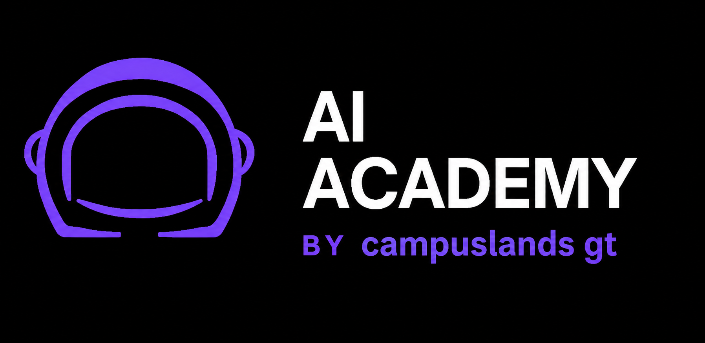

Clase 1 · Cimientos
Configura.
Comprende.
Privacidad, memoria, vocabulario y los comandos esenciales para empezar con criterio.
1 Preparar el terreno

Clase 2 · Planos
Dirige con
prompts ROCAV.
Convierte una idea vaga en instrucciones claras, comprobables y reutilizables.
2 Dibujar el resultado

Clase 3 · Herramientas
Construye
skills.
Transforma una buena manera de trabajar en un procedimiento que puedas probar y repetir.
3 Crear la caja de herramientas

Clase 4 · Equipo coordinado
Agente +
2 subagentes.
Delega con límites, permisos, trazas y aprobación humana cuando realmente importa.
4 Coordinar sin perder el control
IA de cero a Agentes
Aprender · practicar · construir · demostrar